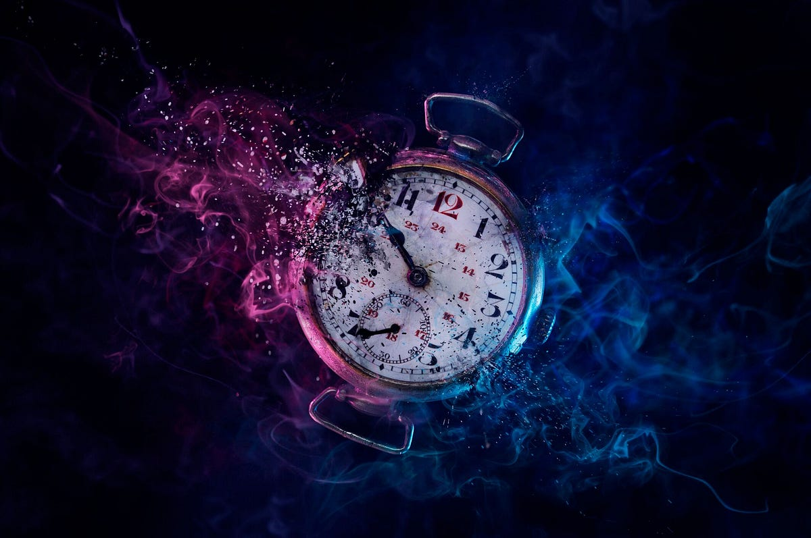
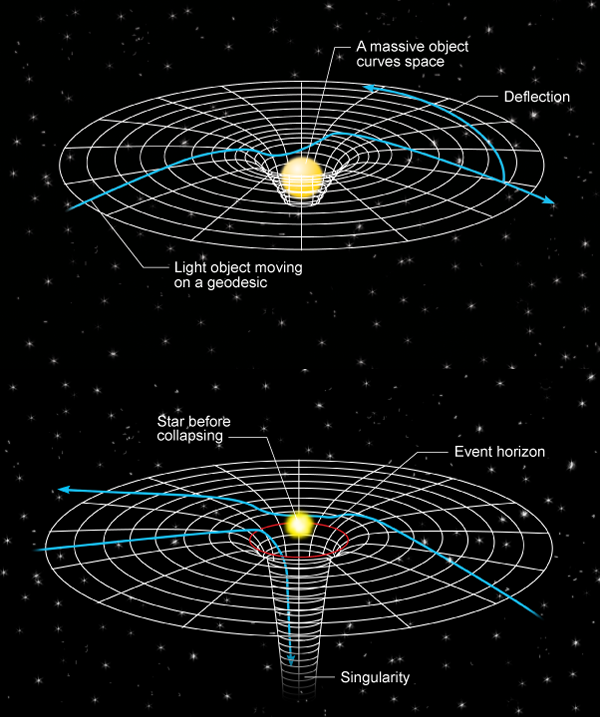
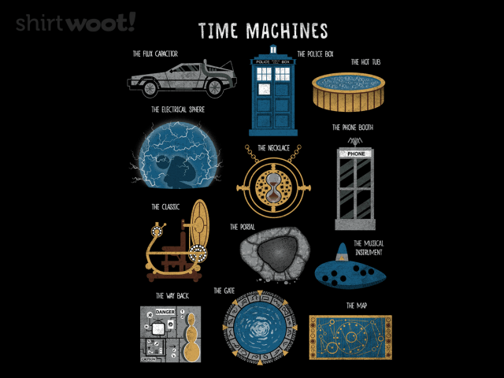

Introduction

Time travel has captivated the imagination of humanity for centuries. The idea of moving through time, whether to relive history or witness the future, has been a central theme in literature, movies, and scientific discussions. Many believe time travel is purely fictional, while others argue that science might one day make it a reality. But what does science really say about the possibility of traveling through time?
Scientific Theories

Physicists have explored various theories that suggest time travel might be possible. Albert Einstein's Theory of Relativity proposes that time is not absolute but relative and can be affected by speed and gravity. According to the theory, traveling at speeds close to the speed of light could slow down time for the traveler relative to others, a concept known as time dilation.
Another theory involves wormholes—hypothetical shortcuts in space-time that could connect distant points, potentially allowing for time travel. However, wormholes are purely theoretical and have yet to be observed in reality. Additionally, the concept of closed timelike curves (CTCs) in physics suggests that loops in space-time could enable travel to the past, but they also introduce paradoxes such as the famous "grandfather paradox."
Quantum mechanics also provides interesting possibilities. Some interpretations suggest that quantum entanglement and superposition might hold the key to time travel. Theoretical physicists have proposed that manipulating quantum states could allow for limited forms of temporal navigation.
The concept of cosmic strings—infinitely long and extremely dense structures—has also been theorized as a potential mechanism for time travel. These cosmic strings, if they exist, could theoretically warp space-time in such a way that allows for time loops or travel to the past or future.
Fictional Concepts

Time travel has been a major theme in science fiction, providing endless storytelling possibilities. Classic literature such as H.G. Wells' "The Time Machine" introduced the idea of a mechanical device that could transport individuals through time. In popular movies like "Back to the Future," time travel is depicted as a thrilling yet dangerous endeavor with unforeseen consequences.
Many fictional works explore paradoxes and alternate realities. The "butterfly effect," where minor changes in the past drastically alter the future, is a recurring theme in time travel fiction. Similarly, concepts like time loops, alternate timelines, and multiverse theories have been popularized in films like "Interstellar" and TV series such as "Dark." While these interpretations are creative, they often ignore the real-world limitations imposed by physics.
Another interesting fictional concept is time displacement, where characters are unwillingly thrown into different time periods due to unknown forces or experiments gone wrong. This can be seen in movies like "The Terminator" and "The Time Traveler’s Wife."
Many stories also introduce the concept of time travel through magic or supernatural means. For example, in the "Harry Potter" series, the Time-Turner allows characters to revisit past events, and in fantasy settings, time portals or divine intervention often play a role in time manipulation.